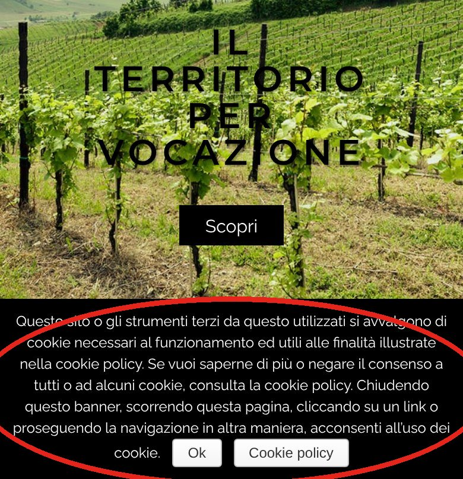
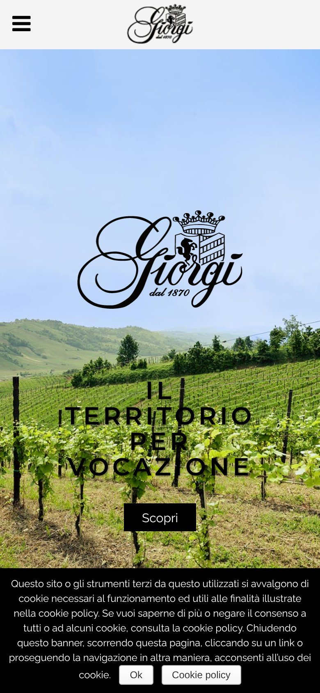
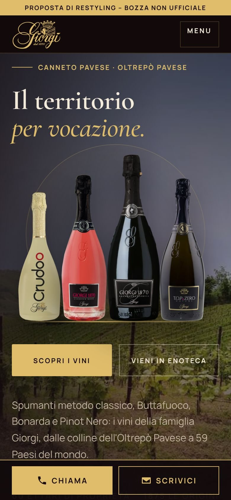
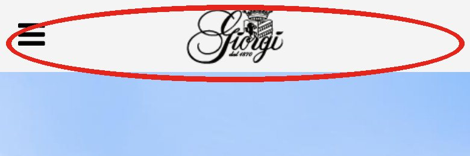
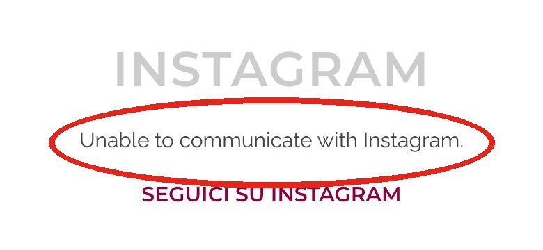

Il banner cookie occupa un quarto dello schermo
Su telefono il testo legale a tutta larghezza copre la parte bassa della prima schermata, e il titolo nero sulle viti si legge a fatica. Chi arriva vede prima un avviso che il vino.

Confronto
Trascina il cursore: a sinistra il sito di oggi visto da telefono, a destra la proposta.


OggiCon noiSposta il cursore con il dito o con il mouse.
Su telefono il testo legale a tutta larghezza copre la parte bassa della prima schermata, e il titolo nero sulle viti si legge a fatica. Chi arriva vede prima un avviso che il vino.

In alto c'è solo il menu a tre righe: nessun pulsante per telefonare o scrivere, e nella pagina non c'è nemmeno un link telefonico cliccabile. Il numero compare solo come testo in fondo.

Nella home compare la scritta «Unable to communicate with Instagram»: un blocco rotto, lasciato in vista, che dà l'idea di un sito non curato. La pagina inoltre non usa HTTPS e riporta ancora «© 2015».

Misure con Lighthouse in modalità telefono: sito attuale misurato online, proposta misurata in locale.